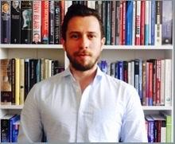

Kadromuz
Yrd. Doç. Dr. Aytaç Kadıoğlu

Aytaç Kadıoğlu Ortadoğu Enstitüsü, Ortadoğu Çalışmaları Ana Bilim Dalı'nda görev yapmaktadır. Lisans derecesini İstanbul Üniversitesi Siyasal Bilgiler Fakültesi'nde tamamladıktan sonra yüksek lisansını University of Leicester'da (İngiltere) Uluslararası İlişkiler bölümünde, doktorasını ise University of Nottingham'da (İngiltere) Uluslararası İlişkiler bölümünde tamamlamıştır. Çatışma çözümü, etnik ve ulusal temelli çatışmalar, savaş ve barış çalışmaları, Ortadoğu'da güvenlik ve uluslararası ilişkiler teorisi alanlarında araştırmalar yapmaktadır.
Kadıoğlu'nun çalışmaları Edinburgh University Press, Studies in Conflict and Terrorism, Middle Eastern Studies, Journal of Conflict, Security and Development, Journal of Political Sciences ve Pacific Focus gibi akademik dergilerde yayınlanmıştır. Kadıoğlu'nun Great Effort, Little Help? The Influence of Peace Groups towards Ending Ethno-Nationalist Conflicts makalesi uluslararası ilişkiler alanındaki saygın kuruluşlardan International Studies Association tarafından Martin O. Heisler en iyi makale ödülüne layık görülmüştür. Peace Processes in Northern Ireland and Turkey: Rethinking Conflict Resolution kitabı Edinburgh University Press tarafından yayınlanmıştır. Kadıoğlu Türkiye Ortadoğu Çalışmaları dergisinin editörlüğünü yapmaktadır.
İletişim: aytackadioglu@sakarya.edu.tr
Akademik Yayınlar
Makaleler ve Kitaplar
- Kadıoğlu, İ. A. (2020). Peace Processes in Northern Ireland and Turkey: Rethinking Conflict Resolution. Edinburgh: Edinburgh University Press.
- Kadıoğlu, İ. A. and E. Bezci (2020). The Mystery of Intra-Alliance Intelligence: Turkey's Covert Operations in the Cyprus Conflict. Middle Eastern Studies. 56 (4). pp. 638-652.
- Kadıoğlu, İ. A. and E. Bezci (2020). Small State Intelligence: New Zealand in SEATO Security Affairs. Pacific Focus. 35 (1). pp. 5-28.
- Kadıoğlu, İ. A. (2020). The Making of the Hesitant Peace in Northern Ireland. Journal of Political Sciences. 29 (1). pp. 69-88.
- Kadıoğlu, İ. A. (2020). International Peace Efforts in the Syrian Civil War: The "Inevitable" Failure? Turkish Journal of Middle Eastern Studies. 7 (1). pp. 13-44.
- Kadıoğlu, İ. A. (2020). The Rise of Populism and International Security: Populism in the UK and US. International Journal of Eurasia Social Sciences. 11 (40). pp. 341-357.
- Kadıoğlu, İ. A. (2020). Suriye İç Savaşı ve Türkiye: Çatışma, Güvenlik ve Sığınma. OPUS: International Journal of Society Researches. 16 (29). pp.145-179.
- Kadıoğlu, İ. A. (2020). Zeytin Dalı Harekâtı: Türkiye'nin Suriye'ye Sınır Ötesi Operasyonu Ve Meşru Müdafaa Hakkı. PAUSBED. 41.
- Kadıoğlu, İ. A. (2019). The Oslo Talks: Revealing the Turkish Government's Secret Negotiations with the PKK. Studies in Conflict & Terrorism. 42 (10). pp. 915-933.
- Kadıoğlu, İ. A. (2019). Not Our War: Iraq, Iran and Syria's Approaches towards the PKK. The Rest: Journal of Politics and Development. 9 (1). pp. 44-57.
- Kadıoğlu, İ. A. (2018). Great Effort, Little Help? Peace and Conflict Resolution Organisations in Northern Ireland and Turkey. Journal of Conflict, Security & Development. 18 (3). pp. 207-232.
- Kadıoğlu, İ. A. (2018). 'Peacemakers in Action: The Secret Role of Intermediaries in the Northern Ireland Peace Process'. In M. Balcı & A. Al (Eds.), Uluslararası İlişkiler ve Yeni Dünya Düzeni (pp. 150-171), Istanbul: Marmara University Press. ISBN: 978-975-400-419-9.
- Kadıoğlu, İ. A., (2018). 'Crossing the Border of Life: Is the European Union a Safe Haven for Syrian Refugees?'[In Turkish], In E. Özensel, G. Bozbaş, F. Kaleci & N. Salur (Eds.), Ortadoğu'da Göç Hareketleri ve Değişen Dinamikler [Migration Movements in the Middle East and Changing Dynamics] (pp.48-78), Konya: Aybil. ISBN: 978-605-2131-13-8.
Ödüller
- My paper 'Great Effort, Little Help? The Influence of Peace Groups towards Ending Ethno-Nationalist Conflicts'has been awarded the best paper (Martin O. Heisler award) by the Ethnicity, Nationalism and Migration Section of International Studies Association in 2018.
Konferans Bildirileri
- Kadıoğlu, İ. A. (2021). 'Intelligence against Allies: The Backstage of Unknown' presented at the II. International Security Congress: Intelligence and Security, Gendarmerie and Coast Academy, Ankara, 23-25 September.
- Kadıoğlu, İ. A. (2020). 'Peacemaking in Syria: Global and Regional Efforts towards Ending the Syrian Civil War' presented at the V. Middle East Congress, Sakarya University, Turkey, 14-16 November.
- Kadıoğlu, İ. A. (2019). 'Syrian Refugees in Europe: A Humanitarian or Refugee Crisis?' presented at the annual conference of the British International Studies Association (BISA), London, UK, 12-14 June.
- Kadıoğlu, İ. A. (2019). 'Challenges of International Reconciliation in the Syrian Civil War' & 'The Age of Populism in International Security' presented at the European International Studies Association's (EISA) annual conference, Sofia University, Bulgaria, 11-14 September.
- Kadıoğlu, İ. A. (2019). 'Socioeconomic and Socio-cultural Integration of Syrian Refugees in Turkey' presented at the Global Syrian Refugee Crisis: Health and Socioeconomic Perspectives, Challenges and Opportunities Conference, Gaziantep University, Turkey, 14-18 October.
- Kadıoğlu, İ. A. (2019). 'From Forced Migration to Settlement: Integration of Syrian Refugees into Turkish Society' presented at the International Mobility, Migration and Wellbeing Conference, organised by Istanbul University & Oxford Brookes University, Istanbul, Turkey, 11-14 December.
- Kadıoğlu, İ. A. (2018). 'Peacemakers in Action: The Secret Role of Intermediaries in the Northern Ireland Peace Process' presented at the Blue Black Sea International Congress (BBSIC), Marmara University, Istanbul, Turkey, 27-28 September.
- Kadıoğlu, İ. A. (2018). 'Yaşamın Sınırı: Avrupa Birliği Suriyeli Sığınmacılar İçin Güvenli Bir Liman Mı?' presented at the annual conference of the International Congress on Social and Economic Researches (UTIAK), Nevsehir, Turkey, 10-12 May.
- Kadıoğlu, İ. A. (2018). 'The Syrian Civil War: Turkey's Operations to Destroy the PYD-PKK in Syria' presented at the annual conference of the Centre for Strategic Research and Analysis (CESRAN), Istanbul, Turkey, 23-24 April.
- Kadıoğlu, İ. A. (2017). 'Rethinking Peacemakers: The Influence of Intermediaries in Backchannel Communications towards Ending the Northern Irish and Kurdish Conflicts' presented at the annual conference of the European International Studies Association (EISA), Barcelona, Spain, 13-16 September.
- Kadıoğlu, İ. A. (2017). 'Catalysts for Peace? The Role of Peace and Conflict Resolution Organisations in De-escalating the Conflicts in Northern Ireland and Turkey' presented at the annual conference of the British International Studies Association (BISA), Brighton, UK, 14-16 June.
- Kadıoğlu, İ. A. (2017). 'Great Effort, Little Help? The Influence of Peace Groups towards Ending the Northern Irish and Turkey's Kurdish Conflicts' presented at the annual convention of the International Studies Association (ISA), Baltimore, USA, 22-25 February.
- Kadıoğlu, İ. A. (2015). 'The Undeniable Peace: Debating Conflict Resolution Attempts in Northern Ireland and Turkey' presented at the annual conference of the Conflict Research Society (CRS), University of Kent, Canterbury, UK, 14-15 September.
- Kadıoğlu, İ. A. (2015). 'Identity Disputes in Ethno-nationalist Conflicts: Exploring the Influence of Conflict Resolution Attempts: A comparative analysis of the IRA and PKK' presented at the conference of Identity, Crisis and Change, University of Nottingham, Nottingham, UK, 12 June.
- Kadıoğlu, İ. A. (2014). 'The Influence of the Elite Level Approaches of Conflict Resolution towards the Resolution of Ethno-nationalist Conflicts' presented at the annual conference of the Conflict Research Society (CRS), University of Leeds, Leeds, UK, 01-04 September.
- Kadıoğlu, İ. A. (2014). 'The Impact of Multilateral Negotiations towards Ending Ethno-nationalist Terrorism' presented at the Politics without Borders conference, University of Nottingham, Nottingham, UK, 12 June.
- Kadıoğlu, İ. A. (2014). 'Conflict Resolution Efforts towards the Resolution of Ethno-nationalist Terrorism' presented at the University of Nottingham, Nottingham, UK, 8 March.
- Kadıoğlu, İ. A. (2013). 'Search for Peace: Debating Turkey's Contemporary Problem Solving Efforts against the PKK under the Dilemma of the Track I - Track II Diplomacy, presented at the Global Diplomatic Forum (GDF), Cankaya University, Ankara, Turkey, 2-6 September.
Kitap Kritikleri
- Kadıoğlu, İ. A. (2020). 'The Key to Political Success of Rebel Groups' by M. Abrahms, Rules for Rebels: The Science of Victory in Militant History, International Studies Review, 22 (4).
- Kadıoğlu, İ. A. (2015). 'The Relationship between Rhetoric and Terrorist Violence' edited by A. Smith, Political Studies Review, 13 (4).
- Kadıoğlu, İ. A. (2015). 'Turkey-Syria Relations: Between Enmity and Amity' edited by R. Hinnebusch and O. Tur, Political Studies Review, 13 (4).
- Kadıoğlu, İ. A. (2015). 'Template for Peace: Northern Ireland' by S. McDaid, Political Studies Review, 13 (2).
- Kadıoğlu, İ. A. (2015). 'Countering Terrorism in Britain and France: Institutions, Norms and the Shadow of the Past' by F. Foley, Political Studies Review, 13 (2).
- Kadıoğlu, İ. A. (2015). 'Northern Ireland, the Reluctant Peace' by F. Cochrane, Political Studies Review, 13 (1).
- Kadıoğlu, İ. A. (2014). 'Contemporary Conflict Resolution' by O. Ramsbotham, T. Woodhouse and H. Miall, Political Studies Review, 12 (2).
Online Makaleler ve Blog Yazıları
- Kadıoğlu, İ. A. (2016). 'The End of Turkey's Kurdish 'Peace Process'?, NottsPolitics, Published on: February 16.
- Kadıoğlu, İ. A. (2013). 'Northern Ireland: The Reluctant Peace', Review, Ballots & Bullets, Published on: October 25.
Verdiği Dersler
Sakarya Üniversitesi
- The State and Politics in the Middle East and Gulf (Ph.D. Module)
- The Arab Spring and Political Transitions (Ph.D. Module)
- Research Methodology in International Relations (MA Module)
- Turkey's Middle East Politics (MA Module)
- Theories of International Relations (2nd Year BA Module)
University of Nottingham
- Global Security (2nd Year BA Module)
- Problems in Global Politics (1st Year BA Module)
- Introduction to Comparative Politics (1st Year BA Module)
- Understanding Global Politics (1st Year BA Module)
Adıyaman Üniversitesi
- Political History, since 1789 (MA Module)
- European Union-Turkey Relations (MA Module)
- International Security and Peace (4th Year BA Module)
- Politics and State in the Middle East (3rd Year BA Module)
- International Relations (3rd Year BA Module)
- Political History (3rd Year BA Module)
- Multiculturalism, Ethnicity and Identity (4th Year BA Module)
- European Union and Turkey (4th Year BA Module)
- Modern State Systems (4th Year BA Module)
- Politics of Sociology (3rd Year BA Module)
- Political Science (1st Year BA Module)
Bilimsel Kuruluşlara Üyelikler
- International Studies Association - ISA (US)
- Conflict Research Society – CRS (UK)
- British International Studies Association – BISA (UK)
- European International Studies Association – EISA (EU)